Part A.1: Shoot the Pictures
For the purpose of this project, we took a myriad of photos with a fixed center of projection and rotating camera. A few are shown below.
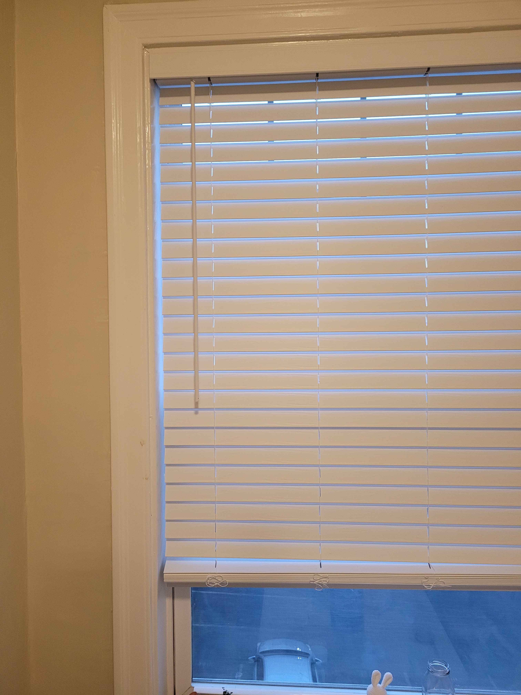
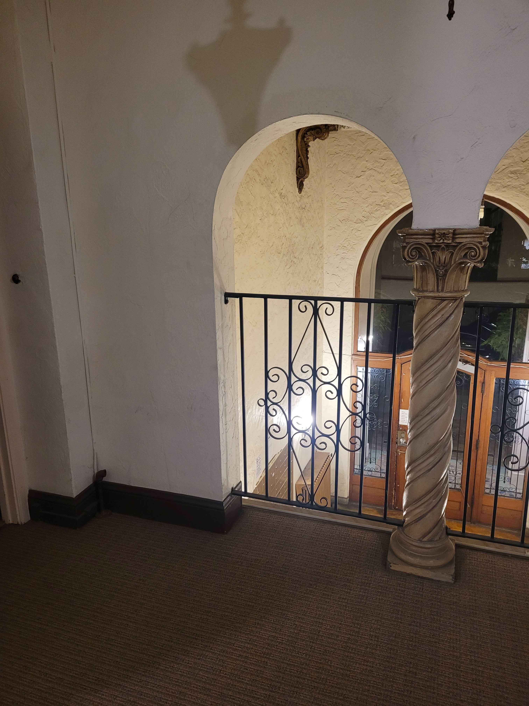
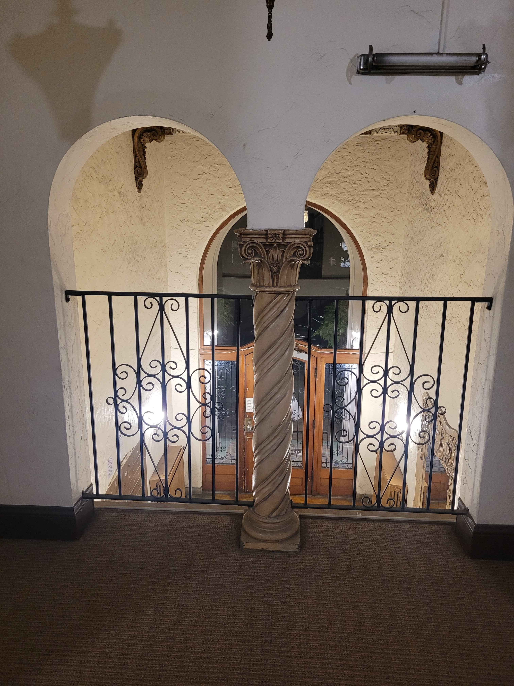
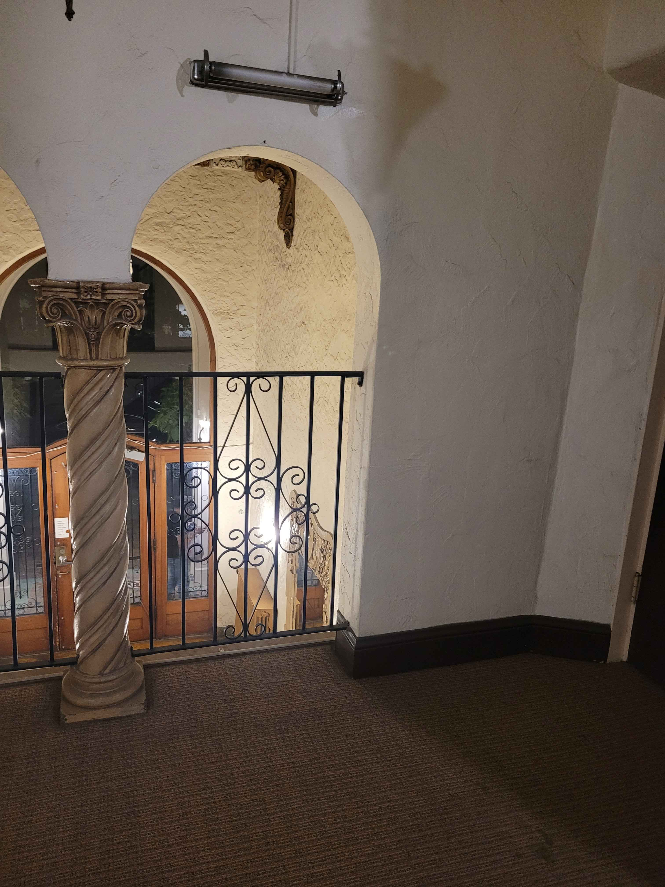
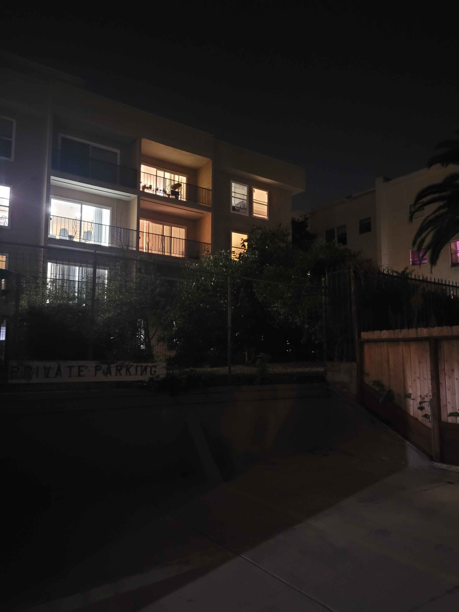
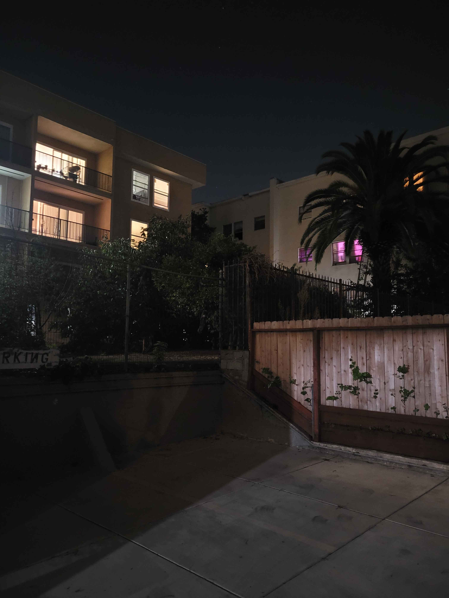
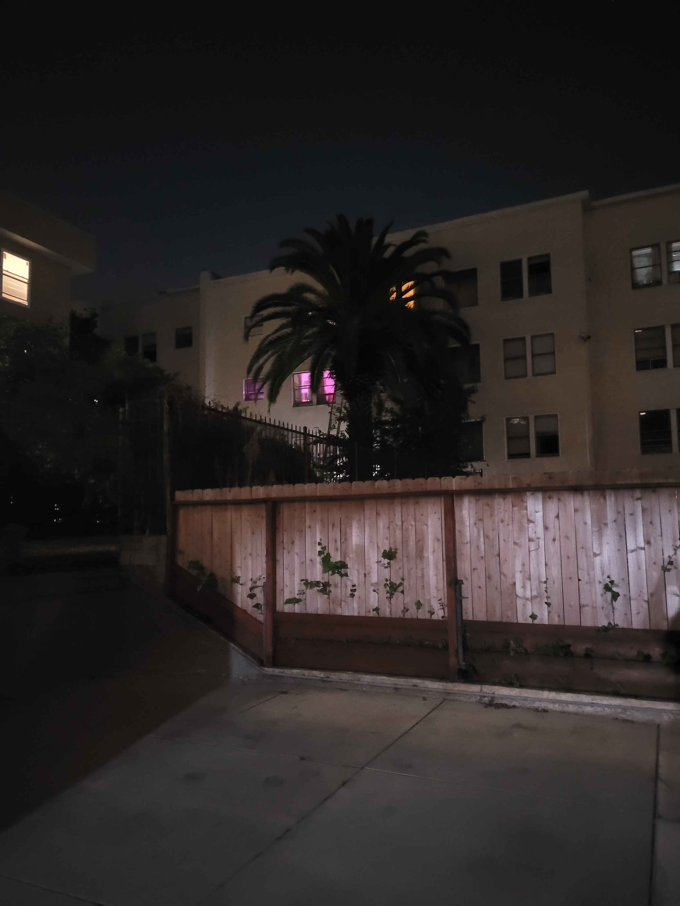
Part A.2: Recover Homographies
Before we can warp images, we need to compute the homography matrix between two images. Thus, we wrote the function computeH(im1_pts, im2_pts) to determine the homography matrix from a set of corresponding points.
To solve for H, which has 8 degrees of freedom, we can set up a system of linear equations based on the definition:
\[p'=Hp\]
\[\begin{bmatrix}wx'\\wy'\\w\end{bmatrix}=\begin{bmatrix}H_{00}&H_{01}&H_{02}\\H_{10}&H_{11}&H_{12}\\H_{20}&H_{21}&1\end{bmatrix}
\begin{bmatrix}x\\y\\1\end{bmatrix}\]
\[H_{00}x+H_{01}y+H_{02} = wx'\]
Which we can rewrite as a system of equations as follows:
\[H_{00}x+H_{01}y+H_{02} = wx'\]
\[H_{10}x+H_{11}y+H_{12} = wy'\]
\[H_{20}x+H_{21}y+1 = w\]
Reorganizing terms...
\[H_{00}x+H_{01}y+H_{02} = (H_{20}x+H_{21}y+1)x'\]
\[H_{10}x+H_{11}y+H_{12} = (H_{20}x+H_{21}y+1)y'\]
Moving terms...
\[H_{00}x+H_{01}y+H_{02} - H_{20}xx'-H_{21}yx'-x'=0\]
\[H_{10}x+H_{11}y+H_{12} - H_{20}xy'+H_{21}yy'+y'=0\]
Thus, it's clear that for each pair of points (x,y) and (x',y') we introduce 2 equations
\[\begin{bmatrix}x&y&1&0&0&0&-xx'&-yx'&-x'\\0&0&0&x&y&1&-xy'&-yy'&-y'\\ &&&&&\vdots \end{bmatrix}\begin{bmatrix}H_{00}\\H_{01}\\H_{02}\\H_{10}\\H_{11}\\H_{12}\\H_{20}\\H_{21}\\1\end{bmatrix}=\begin{bmatrix}0\\0\\\vdots\end{bmatrix}\]
Having taken an introductory linear algebra course, one can tell you can find the least squares solution using singular value decomposition (consult your college linear algebra textbook for details).
For this section, to get the corresponding points, we used this online tool to select the points manually.
For the following example, the correspondences are shown below.
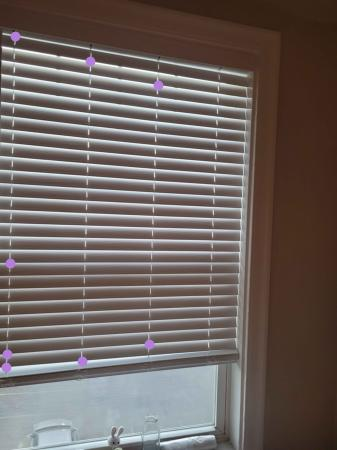
We recovered the following homography matrix for this example: \[H=\begin{bmatrix}1.475&-0.047&-1563\\0.351&1.285&-685\\0.0002&0.000006&1.0 \end{bmatrix}\]
A.3: Warp the images
Now that we have the homography matrix, we can begin image warping. To do this, we first find the bounding box of the warped image. We do this by warping the corners of the original image using the homography matrix (H @ corners).
Then iterating through the pixels of the output image, we inverse warp back to the original coordinates and sample a pixel from the original.
We implemented two different methods of sampling: nearest neighbor sampling and bilinear sampling. Nearest neight sampling just gets the value from the nearest pixel while bilinear sampling weights the surrounding pixels based on the sampling coordinate.
With these functions, we performed image rectification. We took an image and specified four points corresponding to a planar, rectangular face which we warp to be face on.
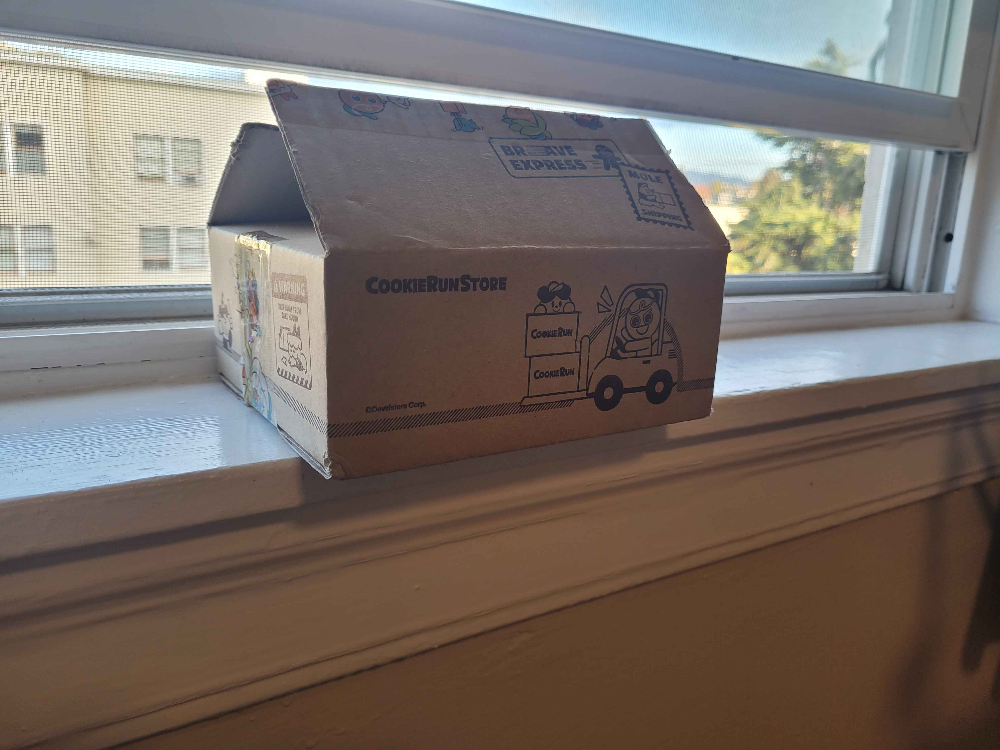
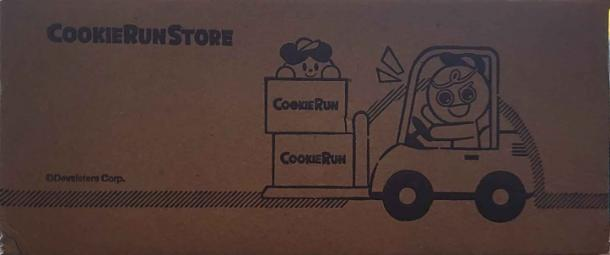
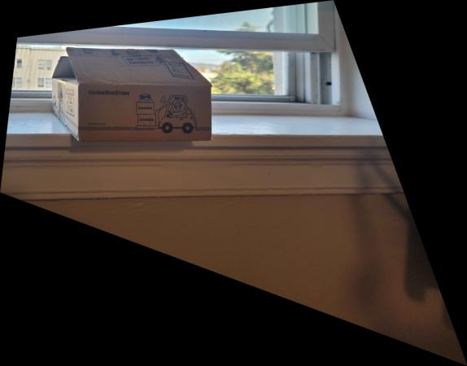

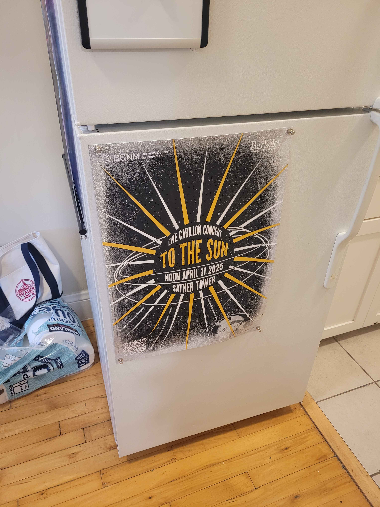
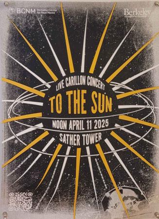
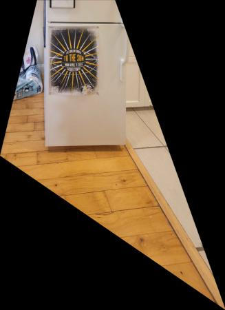
Bilinear sampling gives higher quality results, but is slower than nearest neighbor.
A.4: Blend the images into a mosaic
Now that we can warp images, we can blend them into a mosaic. By warping all the corner points of all the images being stitched, we can calculate the bounding box of the final output. Then, by following the same procedure as part A.3, we can warp an image to be in the same perspective as the base image.
Then, we can use the output bounding box coordinates to place the resulting image on top of the base image in the output bounding box.
However, simply placing the image on top looks terrible! Thus, we blended the images together using alpha blending. We creataed the alpha mask using scipy.ndimage.distance_transform_edt which is similar to MATLAB's bwdist. We then warped the alpha mask with the same H as we used for the image. Then we multiplied the warped alpha with the warped image when adding the warped image to the output.
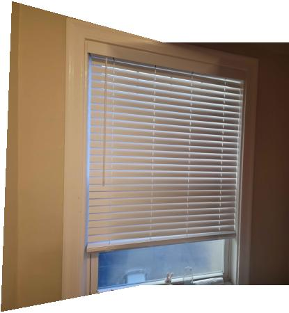
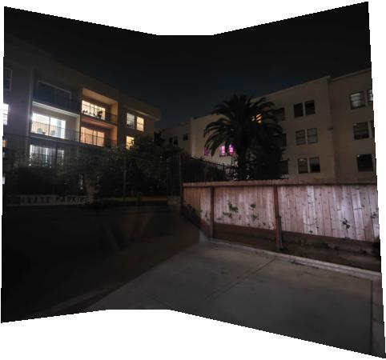
B.1: Harris Corner Detection
It's a lot of work manually defining the correspondences! Moreover, there is a lot of error doing it by eye.
Thus, we decided to implement feature matching for auto stitching. To do this, we first detected corners in the image using the Harris corner alghorithm (skimage.feature.corner_harris) and extracted the Harris corner response image.
This gives us many more points than are needed and to keep the computation feasible, we need to select a couple of these.
To that end, we used Adaptive Non-Maximal Suppression (ANMS) as described in this paper.
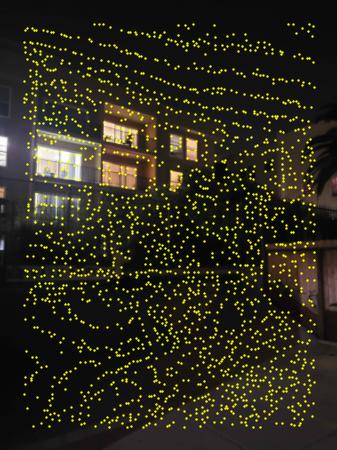
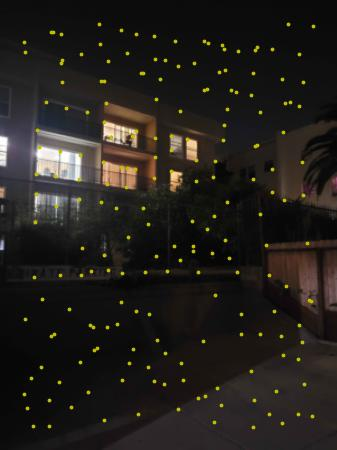
B.2: Feature Descriptor Extraction
Ok now we have some significant points in the image. How do we use these to define correspondences? Well, to start we have to extract the features at each of these points. We expect out mosaic images to share features so we can find correspondences based on feature matching. So, to first find out features, we take a 40x40 window around each point if it is within bounds of the image. Then, we blur this region and sample 8x8 pixels in this region with a spacing of 5 pixels between samples. Finally we normalize the vector to have a mean of 0 and standard deviation of 1.
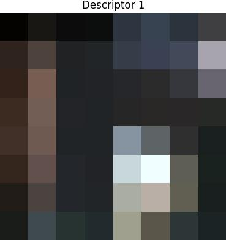
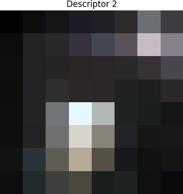
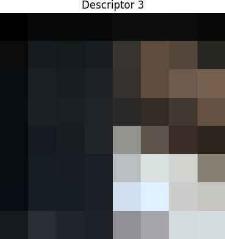
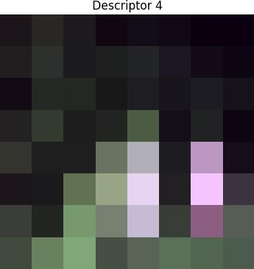
B.3: Feature Matching
Woo, we have the features! Now, we just need to match them between images to find out correspondences. To detect matches, followed section 5 of the paper linked above. We first calculated the pairwise distances using the norm of the difference vector. We then calculate the Lowe score of the match which is defined as the distance from the first nearest neighbor over the distance from the second nearest neighbor. By assuring that the feature much more closely matches 1-NN over 2-NN, we are much less likely to have a false positive. Values of the ratio that fall below the threshold are considered matches.
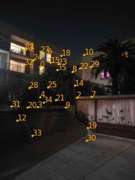
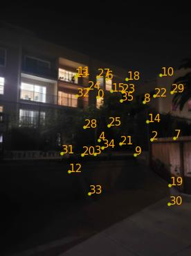
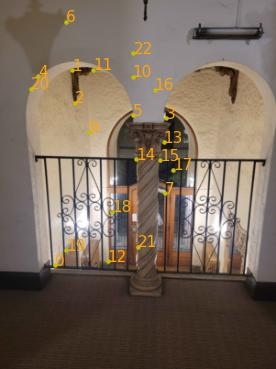
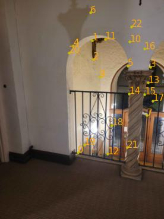
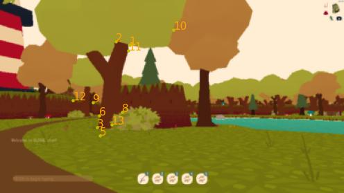
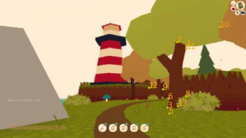
Interestingly, this did not work at all for the window images. This is likely because the window has translational symmetry so many of the signficiant features may look similar, so it's hard to distinguish which feature matches another if they are all too similar. This is clear when adjusting the threshold. There are 0 matches below a Lowe score of 0.8 and only when we get to 0.9-1.0 are matches found. But a Lowe score of 1.0 means the program cannot distinguish between the 1-NN and the 2-NN so the alghorithm struggles to properly match for photos with a lot of symmetry.
B.4: RANSAC for Robust Homography
Now that we have feature matches, we can calculate the homographies and create the mosaics! To do this we implemented Random Sample Consensus (RANSAC):
- Choose four pairs of points of matched points at random
- Calculate homography using these points
- Count the number of points after transformation that are within a certain euclidean distance to their corresponding matched point
- Repeat steps 1-3 many times (we used 1000 iterations) to find the best group of inliers
- Take the iteration with the most points that satisfy the previous creterion and calculate the final homography
With the final homography, we can reuse our mosaic code and create the final mosaic!
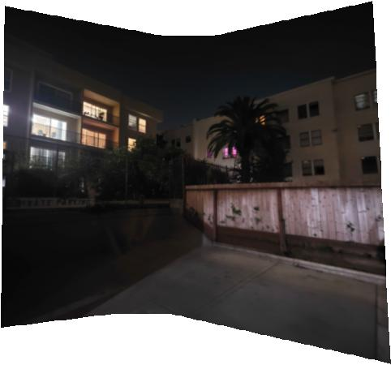
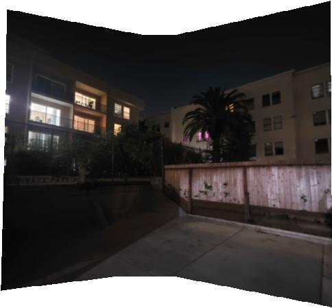
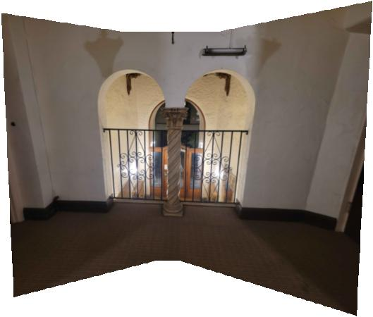
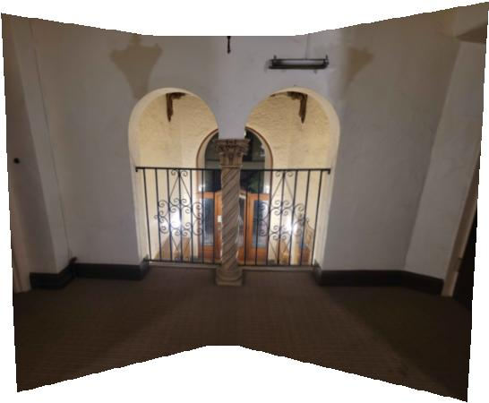

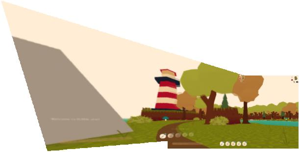